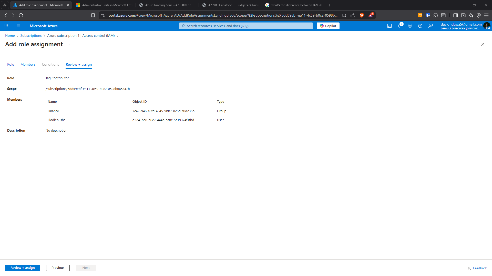
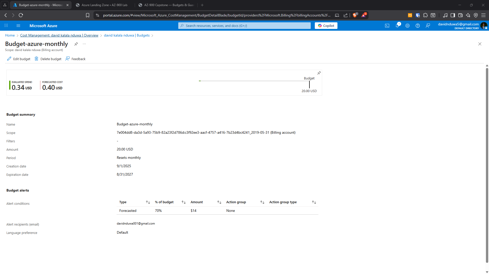
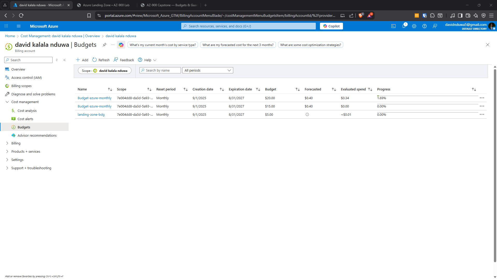

Problem
Uncontrolled Azure environments risk overspend, resource sprawl, and privilege escalation. Without early guardrails, costs spiral and security posture degrades before the team notices.
Architecture
Subscription-level governance baseline with budget monitoring at multiple thresholds, Azure Policy enforcement for region and tag compliance, and RBAC separation between admin, finance, and operational roles.

Assigned Policy

Assignrrole

Details Budget Spending

Sub Iam
Implementation
- Monthly budget configured at $20 with 70% and 100% alert thresholds
- Azure Policy: Allowed Regions (East US, West US)
- Azure Policy: Required tags (owner, costCenter)
- Azure Policy: Deny public IPs on NICs
- RBAC roles: Owner, Reader, Custom Tag Contributor
Validation
- Policy compliance dashboard confirmed enforcement
- Deny effect blocked out-of-region deployment attempts
- Budget alerts triggered during simulated overuse
- Tag-only custom role verified: can tag but cannot delete

Netowrk Denied

Requires Tags
Policy Page Details

List
Quantified Outcomes
- Prevented 100% of out-of-region deployments in test environment
- Achieved 100% tag compliance across all resources
- Established cost alert visibility within 1 billing cycle
- RBAC validated across 3 role assignments
Failure Scenarios Tested
- Attempted out-of-region deployment → Policy Deny triggered
- Created resource without required tags → deployment blocked
- Assigned Tag Contributor role → confirmed cannot delete resources
- Simulated overspend → budget alert email received
Operational Considerations
- In production: apply Policy initiatives at Management Group scope, not subscription
- Add Azure Cost Management exports to storage for long-term trend analysis
- Implement Policy exemptions process for legitimate exceptions
- Add automated remediation tasks for non-compliant resources
Lessons Learned
- Governance must come before workload deployment, not after
- Tag enforcement at deployment time is far more effective than retroactive tagging
- Custom RBAC roles enable least-privilege without blocking legitimate work
- Budget alerts are only useful if action owners are clearly defined
Business Impact
Reduced financial risk and improved governance control before scaling. Established a repeatable governance baseline that can be applied to any new subscription or management group.